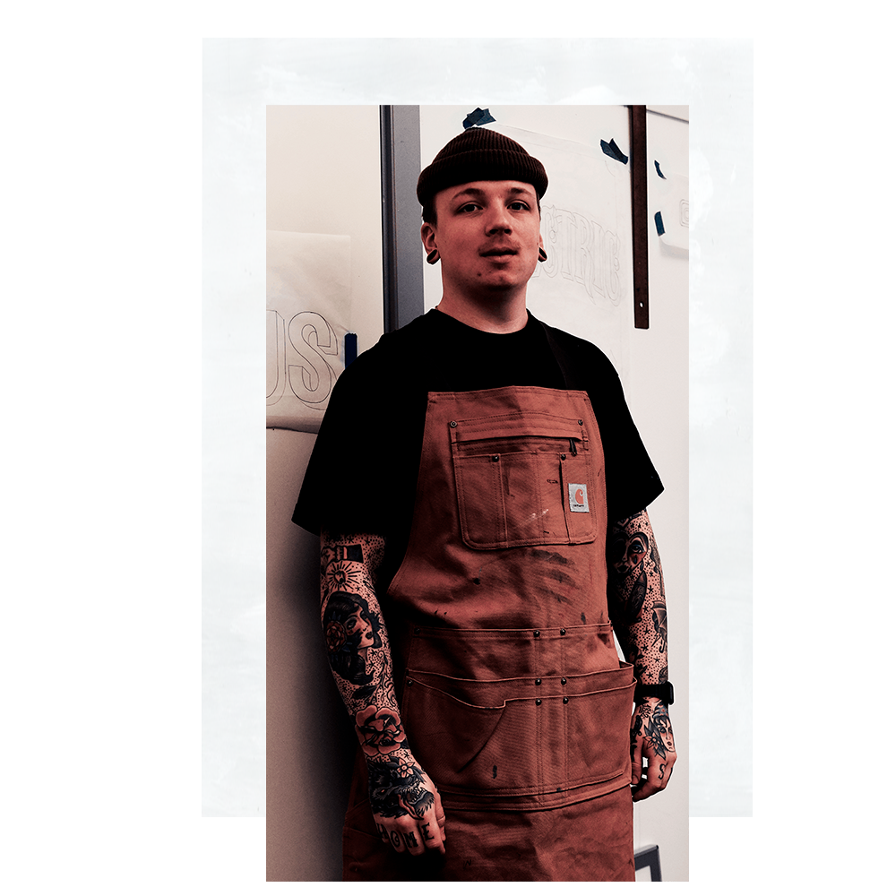

Mit navn er Anton Bo, og jeg laver håndmalede og personlige skilte, gavle, ruder og værker på andre materialer jeg kan få fingrene i.
OM MIG

HVEM ER SIGNS BY BO?
FRA GRAFFITTI
TIL SKILTEMALER
Jeg har siden barnsben været interesseret i at male og tegne. Hele interessen med at få mine værker ud i det offentlige rum, startede med timevis af graffiti maling, hvorefter jeg søgte andre måder at udtrykke mig på kreativt og visuelt. Første gang jeg prøvede at male et skilt, var jeg overbevist om at det var det jeg ville lave resten af mit liv.

BAGGRUND
Jeg er uddannet maler fra Aarhus Tech College, hvor jeg har arbejdet meget med kreative produkter og løsninger. Jeg har arbejdet for Den Gamle By i Aarhus i de sidste 5 år, hvor jeg her igennem blev udlært skiltemaler. I 2018 valgte jeg at starte selvstændigt op som skiltemaler.